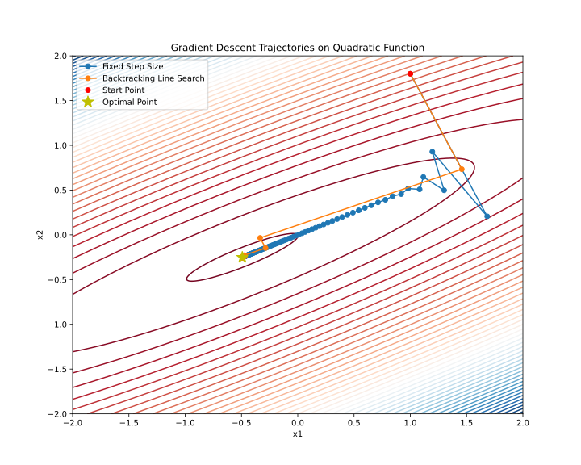

Linear algebra basics
[5 points] Sensitivity Analysis in Linear Systems Consider a nonsingular matrix A \in \mathbb{R}^{n \times n} and a vector b \in \mathbb{R}^n. Suppose that due to measurement or computational errors, the vector b is perturbed to \tilde{b} = b + \delta b.
- Derive an upper bound for the relative error in the solution x of the system Ax = b in terms of the condition number \kappa(A) and the relative error in b.
- Provide a concrete example using a 2 \times 2 matrix where \kappa(A) is large (say, \geq 100500).
- Derive an upper bound for the relative error in the solution x of the system Ax = b in terms of the condition number \kappa(A) and the relative error in b.
[5 points] Effect of Diagonal Scaling on Rank Let A \in \mathbb{R}^{n \times n} be a matrix with rank r. Suppose D \in \mathbb{R}^{n \times n} is a diagonal matrix. Determine the rank of the product DA. Explain your reasoning.
[8 points] Unexpected SVD Compute the Singular Value Decomposition (SVD) of the following matrices:
- A_1 = \begin{bmatrix} 2 \\ 2 \\ 8 \end{bmatrix}
- A_2 = \begin{bmatrix} 0 & x \\ x & 0 \\ 0 & 0 \end{bmatrix}, where x is the sum of your birthdate numbers (day + month).
[10 points] Effect of normalization on rank Assume we have a set of data points x^{(i)}\in\mathbb{R}^{n},\,i=1,\dots,m, and decide to represent this data as a matrix X = \begin{pmatrix} | & & | \\ x^{(1)} & \dots & x^{(m)} \\ | & & | \\ \end{pmatrix} \in \mathbb{R}^{n \times m}.
We suppose that \text{rank}\,X = r.
In the problem below, we ask you to find the rank of some matrix M related to X. In particular, you need to find relation between \text{rank}\,X = r and \text{rank}\,M, e.g., that the rank of M is always larger/smaller than the rank of X or that \text{rank}\,M = \text{rank}\,X \big / 35. Please support your answer with legitimate arguments and make the answer as accurate as possible.
Note that border cases are possible depending on the structure of the matrix X. Make sure to cover them in your answer correctly.
In applied statistics and machine learning, data is often normalized. One particularly popular strategy is to subtract the estimated mean \mu and divide by the square root of the estimated variance \sigma^2. i.e. x \rightarrow (x - \mu) \big / \sigma. After the normalization, we get a new matrix \begin{split} Y &:= \begin{pmatrix} | & & | \\ y^{(1)} & \dots & y^{(m)} \\ | & & | \\ \end{pmatrix},\\ y^{(i)} &:= \frac{x^{(i)} - \frac{1}{m}\sum_{j=1}^{m} x^{(j)}}{\sigma}. \end{split} What is the rank of Y if \text{rank} \; X = r? Here \sigma is a vector and the division is element-wise. The reason for this is that different features might have different scales. Specifically: \sigma_i = \sqrt{\frac{1}{m}\sum_{j=1}^{m} \left(x_i^{(j)}\right)^2 - \left(\frac{1}{m}\sum_{j=1}^{m} x_i^{(j)}\right)^2}.
[20 points] Image Compression with Truncated SVD Explore image compression using Truncated Singular Value Decomposition (SVD). Understand how varying the number of singular values affects the quality of the compressed image. Implement a Python script to compress a grayscale image using Truncated SVD and visualize the compression quality.
- Truncated SVD: Decomposes an image A into U, S, and V matrices. The compressed image is reconstructed using a subset of singular values.
- Mathematical Representation:
A \approx U_k \Sigma_k V_k^T
- U_k and V_k are the first k columns of U and V, respectively.
- \Sigma_k is a diagonal matrix with the top k singular values.
- Relative Error: Measures the fidelity of the compressed image compared to the original. \text{Relative Error} = \frac{\| A - A_k \|}{\| A \|}
import matplotlib.pyplot as plt import matplotlib.animation as animation import numpy as np from skimage import io, color import requests from io import BytesIO def download_image(url): response = requests.get(url) img = io.imread(BytesIO(response.content)) return color.rgb2gray(img) # Convert to grayscale def update_plot(i, img_plot, error_plot, U, S, V, original_img, errors, ranks, ax1, ax2): # Adjust rank based on the frame index if i < 70: rank = i + 1 else: rank = 70 + (i - 69) * 10 reconstructed_img = ... # YOUR CODE HERE # Calculate relative error relative_error = ... # YOUR CODE HERE errors.append(relative_error) ranks.append(rank) # Update the image plot and title img_plot.set_data(reconstructed_img) ax1.set_title(f"Image compression with SVD\n Rank {rank}; Relative error {relative_error:.2f}") # Remove axis ticks and labels from the first subplot (ax1) ax1.set_xticks([]) ax1.set_yticks([]) # Update the error plot error_plot.set_data(ranks, errors) ax2.set_xlim(1, len(S)) ax2.grid(linestyle=":") ax2.set_ylim(1e-4, 0.5) ax2.set_ylabel('Relative Error') ax2.set_xlabel('Rank') ax2.set_title('Relative Error over Rank') ax2.semilogy() # Set xticks to show rank numbers ax2.set_xticks(range(1, len(S)+1, max(len(S)//10, 1))) # Adjust the step size as needed plt.tight_layout() return img_plot, error_plot def create_animation(image, filename='svd_animation.mp4'): U, S, V = np.linalg.svd(image, full_matrices=False) errors = [] ranks = [] fig, (ax1, ax2) = plt.subplots(2, 1, figsize=(5, 8)) img_plot = ax1.imshow(image, cmap='gray', animated=True) error_plot, = ax2.plot([], [], 'r-', animated=True) # Initial empty plot for errors # Add watermark ax1.text(1, 1.02, '@fminxyz', transform=ax1.transAxes, color='gray', va='bottom', ha='right', fontsize=9) # Determine frames for the animation initial_frames = list(range(70)) # First 70 ranks subsequent_frames = list(range(70, len(S), 10)) # Every 10th rank after 70 frames = initial_frames + subsequent_frames ani = animation.FuncAnimation(fig, update_plot, frames=len(frames), fargs=(img_plot, error_plot, U, S, V, image, errors, ranks, ax1, ax2), interval=50, blit=True) ani.save(filename, writer='ffmpeg', fps=8, dpi=300) # URL of the image url = "" # Download the image and create the animation image = download_image(url) create_animation(image)
Convergence rates
[6 points] Determine (it means to prove the character of convergence if it is convergent) the convergence or divergence of the given sequences
- r_{k} = \frac{1}{\sqrt{k+5}}.
- r_{k} = 0.101^k.
- r_{k} = 0.101^{2^k}.
[8 points] Let the sequence \{r_k\} be defined by r_{k+1} = \begin{cases} \frac{1}{2}\,r_k, & \text{if } k \text{ is even}, \\ r_k^2, & \text{if } k \text{ is odd}, \end{cases} with initial value 0 < r_0 < 1. Prove that \{r_k\} converges to 0 and analyze its convergence rate. In your answer, determine whether the overall convergence is linear, superlinear, or quadratic.
[6 points] Determine the following sequence \{r_k\} by convergence rate (linear, sublinear, superlinear). In the case of superlinear convergence, determine whether there is quadratic convergence. r_k = \dfrac{1}{k!}
[8 points] Consider the recursive sequence defined by r_{k+1} = \lambda\,r_k + (1-\lambda)\,r_k^p,\quad k\ge0, where \lambda\in [0,1) and p>1. Which additional conditions on r_0 should be satisfied for the sequence to converge? Show that when \lambda>0 the sequence converges to 0 with a linear rate (with asymptotic constant \lambda), and when \lambda=0 determine the convergence rate in terms of p. In particular, for p=2 decide whether the convergence is quadratic.
Line search
[10 points] Consider a strongly convex quadratic function f: \mathbb{R}^n \rightarrow \mathbb{R}, and let us start from a point x_k \in \mathbb{R}^n moving in the direction of the antigradient -\nabla f(x_k), note that \nabla f(x_k)\neq 0. Show that the minimum of f along this direction as a function of the step size \alpha, for a decreasing function at x_k, satisfies Armijo’s condition for any c_1 in the range 0 \leq c_1 \leq \frac{1}{2}. Specifically, demonstrate that the following inequality holds at the optimal \alpha^*: \varphi(\alpha) = f(x_{k+1}) = f(x_k - \alpha \nabla f(x_k)) \leq f(x_k) - c_1 \alpha \|\nabla f(x_k)\|_2^2
Implementing and Testing Line Search Conditions in Gradient Descent [36 points] x_{k+1} = x_k - \alpha \nabla f(x_k) In this assignment, you will modify an existing Python code for gradient descent to include various line search conditions. You will test these modifications on two functions: a quadratic function and the Rosenbrock function. The main objectives are to understand how different line search strategies influence the convergence of the gradient descent algorithm and to compare their efficiencies based on the number of function evaluations.
import numpy as np import matplotlib.pyplot as plt from scipy.optimize import minimize_scalar np.random.seed(214) # Define the quadratic function and its gradient def quadratic_function(x, A, b): return 0.5 * np.dot(x.T, np.dot(A, x)) - np.dot(b.T, x) def grad_quadratic(x, A, b): return np.dot(A, x) - b # Generate a 2D quadratic problem with a specified condition number def generate_quadratic_problem(cond_number): # Random symmetric matrix M = np.random.randn(2, 2) M = np.dot(M, M.T) # Ensure the matrix has the desired condition number U, s, V = np.linalg.svd(M) s = np.linspace(cond_number, 1, len(s)) # Spread the singular values A = np.dot(U, np.dot(np.diag(s), V)) # Random b b = np.random.randn(2) return A, b # Gradient descent function def gradient_descent(start_point, A, b, stepsize_func, max_iter=100): x = start_point.copy() trajectory = [x.copy()] for i in range(max_iter): grad = grad_quadratic(x, A, b) step_size = stepsize_func(x, grad) x -= step_size * grad trajectory.append(x.copy()) return np.array(trajectory) # Backtracking line search strategy using scipy def backtracking_line_search(x, grad, A, b, alpha=0.3, beta=0.8): def objective(t): return quadratic_function(x - t * grad, A, b) res = minimize_scalar(objective, method='golden') return res.x # Generate ill-posed problem cond_number = 30 A, b = generate_quadratic_problem(cond_number) # Starting point start_point = np.array([1.0, 1.8]) # Perform gradient descent with both strategies trajectory_fixed = gradient_descent(start_point, A, b, lambda x, g: 5e-2) trajectory_backtracking = gradient_descent(start_point, A, b, lambda x, g: backtracking_line_search(x, g, A, b)) # Plot the trajectories on a contour plot x1, x2 = np.meshgrid(np.linspace(-2, 2, 400), np.linspace(-2, 2, 400)) Z = np.array([quadratic_function(np.array([x, y]), A, b) for x, y in zip(x1.flatten(), x2.flatten())]).reshape(x1.shape) plt.figure(figsize=(10, 8)) plt.contour(x1, x2, Z, levels=50, cmap='viridis') plt.plot(trajectory_fixed[:, 0], trajectory_fixed[:, 1], 'o-', label='Fixed Step Size') plt.plot(trajectory_backtracking[:, 0], trajectory_backtracking[:, 1], 'o-', label='Backtracking Line Search') # Add markers for start and optimal points plt.plot(start_point[0], start_point[1], 'ro', label='Start Point') optimal_point = np.linalg.solve(A, b) plt.plot(optimal_point[0], optimal_point[1], 'y*', markersize=15, label='Optimal Point') plt.legend() plt.title('Gradient Descent Trajectories on Quadratic Function') plt.xlabel('x1') plt.ylabel('x2') plt.savefig("linesearch.svg") plt.show()
The code above plots this Start by reviewing the provided Python code. This code implements gradient descent with a fixed step size and a backtracking line search on a quadratic function. Familiarize yourself with how the gradient descent function and the step size strategies are implemented.
[10/36 points] Modify the gradient descent function to include the following line search conditions:
- Dichotomy
- Sufficient Decrease Condition
- Wolfe Condition
- Polyak step size
\alpha_k = \frac{f(x_k) - f^*}{\|\nabla f(x_k)\|_2^2},
where f^* is the optimal value of the function. It seems strange to use the optimal value of the function in the step size, but there are options to estimate it even without knowing the optimal value.
- Sign Gradient Method: \alpha_k = \frac{1}{\|\nabla f(x_k)\|_2}, Test your modified gradient descent algorithm with the implemented step size search conditions on the provided quadratic function. Plot the trajectories over iterations for each condition. Choose and specify hyperparameters for inexact line search conditions. Choose and specify the termination criterion. Start from the point x_0 = (-1, 2)^T.
[8/36 points] Compare these 7 methods from the budget perspective. Plot the graph of function value from the number of function evaluations for each method on the same graph.
[10/36 points] Plot trajectory for another function with the same set of methods f(x_1, x_2) = 10(x_2 − x_1^2)^2 + (x_1 − 1)^2 with x_0 = (-1, 2)^T. You might need to adjust hyperparameters.
[8/36 points] Plot the same function value from the number of function calls for this experiment.
Matrix calculus
[6 points] Find the gradient \nabla f(x) and hessian f^{\prime\prime}(x), if f(x) = \frac{1}{2}\Vert A - xx^T\Vert ^2_F, A \in \mathbb{S}^n
[6 points] Find the gradient \nabla f(x) and hessian f''(x), if f(x) = \dfrac{1}{2} \Vert Ax - b\Vert^2_2.
[8 points] Find the gradient \nabla f(x) and hessian f''(x), if f(x) = \frac1m \sum\limits_{i=1}^m \log \left( 1 + \exp(a_i^{T}x) \right) + \frac{\mu}{2}\Vert x\Vert _2^2, \; a_i, x \in \mathbb R^n, \; \mu>0
[8 points] Compute the gradient \nabla_A f(A) of the trace of the matrix exponential function f(A) = \text{tr}(e^A) with respect to A. Hint: Use the definition of the matrix exponential. Use the definition of the differential df = f(A + dA) - f(A) + o(\Vert dA \Vert) with the limit \Vert dA \Vert \to 0.
[20 points] Principal Component Analysis through gradient calculation. Let there be a dataset \{x_i\}_{i=1}^N, x_i \in \mathbb{R}^D, which we want to transform into a dataset of reduced dimensionality d using projection onto a linear subspace defined by the matrix P \in \mathbb{R}^{D \times d}. The orthogonal projection of a vector x onto this subspace can be computed as P(P^TP)^{-1}P^Tx. To find the optimal matrix P, consider the following optimization problem: F(P) = \sum_{i=1}^N \|x_i - P(P^TP)^{-1}P^Tx_i\|^2 = N \cdot \text{tr}\left((I - P(P^TP)^{-1}P^T)^2 S\right) \to \min_{P \in \mathbb{R}^{D \times d}}, where S = \frac{1}{N} \sum_{i=1}^N x_i x_i^T is the sample covariance matrix for the normalized dataset.
Find the gradient \nabla_P F(P), calculated for an arbitrary matrix P with orthogonal columns, i.e., P : P^T P = I.
Hint: When calculating the differential dF(P), first treat P as an arbitrary matrix, and then use the orthogonality property of the columns of P in the resulting expression.
Consider the eigendecomposition of the matrix S: S = Q \Lambda Q^T, where \Lambda is a diagonal matrix with eigenvalues on the diagonal, and Q = [q_1 | q_2 | \ldots | q_D] \in \mathbb{R}^{D \times D} is an orthogonal matrix consisting of eigenvectors q_i as columns. Prove the following:
- The gradient \nabla_P F(P) equals zero for any matrix P composed of d distinct eigenvectors q_i as its columns.
- The minimum value of F(P) is achieved for the matrix P composed of eigenvectors q_i corresponding to the largest eigenvalues of S.
Automatic differentiation and jax
Benchmarking Hessian-Vector Product (HVP) Computation in a Neural Network via JAX [22 points]
You are given a simple neural network model (an MLP with several hidden layers using a nonlinearity such as GELU). The model’s parameters are defined by the weights of its layers. Your task is to compare different approaches for computing the Hessian-vector product (HVP) with respect to the model’s loss and to study how the computation time scales as the model grows in size.
Model and Loss Definition: [2/22 points] Here is the code for the model and loss definition. Write a method
get_params()that returns the flattened vector of all model weights.import jax import jax.numpy as jnp import time import matplotlib.pyplot as plt import numpy as np import pandas as pd from tqdm.auto import tqdm from jax.nn import gelu # Определение MLP модели class MLP: def __init__(self, key, layer_sizes): self.layer_sizes = layer_sizes keys = jax.random.split(key, len(layer_sizes) - 1) self.weights = [ jax.random.normal(k, (layer_sizes[i], layer_sizes[i + 1])) for i, k in enumerate(keys) ] def forward(self, x): for w in self.weights[:-1]: x = gelu(jnp.dot(x, w)) return jnp.dot(x, self.weights[-1]) def get_params(self): ### YOUR CODE HERE ### return NoneHessian and HVP Implementations: [2/22 points] Write a function
# Функция для вычисления Гессиана def calculate_hessian(model, params): def loss_fn(p): x = jnp.ones((1, model.layer_sizes[0])) # Заглушка входа return jnp.sum(model.forward(x)) ### YOUR CODE HERE ### #hessian_fn = return hessian_fn(params)that computes the full Hessian H of the loss function with respect to the model parameters using JAX’s automatic differentiation.
Naive HVP via Full Hessian: [2/22 points] Write a function
naive_hvp(hessian, vector)that, given a precomputed Hessian H and a vector v (of the same shape as the parameters), computes the Hessian-vector product using a straightforward matrix-vector multiplication.Efficient HVP Using Autograd: [4/22 points] Write a function
python def hvp(f, x, v): return jax.grad(lambda x: jnp.vdot(jax.grad(f)(x), v))(x)that directly computes the HVP without explicitly forming the full Hessian. This leverages the reverse-mode differentiation capabilities of JAX.Timing Experiment: Consider a family of models with an increasing number of hidden layers.
ns = np.linspace(50, 1000, 15, dtype=int) # The number of hidden layers num_runs = 10 # The number of runs for averagingFor each model configuration:
- Generate the model and extract its parameter vector.
- Generate a random vector v of the same dimension as the parameters.
- Measure (do not forget to use
.block_until_ready()to ensure accurate timing and proper synchronization) the following:- Combined Time (Full Hessian + Naive HVP): The total time required to compute the full Hessian and then perform the matrix-vector multiplication.
- Naive HVP Time (Excluding Hessian Computation): The time required to perform the matrix-vector multiplication given a precomputed Hessian.
- Efficient HVP Time: The time required to compute the HVP using the autograd-based function.
- Repeat each timing measurement for a fixed number of runs (e.g., 10 runs) and record both the mean and standard deviation of the computation times.
Visualization and Analysis: [12/22 points]
- Plot the timing results for the three methods on the same graph. For each method, display error bars corresponding to the standard deviation over the runs.
- Label the axes clearly (e.g., “Number of Layers” vs. “Computation Time (seconds)”) and include a legend indicating which curve corresponds to which method.
- Analyze the scaling behavior. Try to analytically derive the scaling of the methods and compare it with the experimental results.
[15 points] We can use automatic differentiation not only to calculate necessary gradients but also for tuning hyperparameters of the algorithm like learning rate in gradient descent (with gradient descent 🤯). Suppose, we have the following function f(x) = \frac{1}{2}\Vert x\Vert^2, select a random point x_0 \in \mathbb{B}^{1000} = \{0 \leq x_i \leq 1 \mid \forall i\}. Consider 10 steps of the gradient descent starting from the point x_0: x_{k+1} = x_k - \alpha_k \nabla f(x_k) Your goal in this problem is to write the function, that takes 10 scalar values \alpha_i and return the result of the gradient descent on function L = f(x_{10}). And optimize this function using gradient descent on \alpha \in \mathbb{R}^{10}. Suppose that each of 10 components of \alpha is uniformly distributed on [0; 0.1]. \alpha_{k+1} = \alpha_k - \beta \frac{\partial L}{\partial \alpha} Choose any constant \beta and the number of steps you need. Describe the obtained results. How would you understand, that the obtained schedule (\alpha \in \mathbb{R}^{10}) becomes better than it was at the start? How do you check numerically local optimality in this problem?
Convexity
[10 points] Show that this function is convex: f(x, y, z) = z \log \left(e^{\frac{x}{z}} + e^{\frac{y}{z}}\right) + (z - 2)^2 + e^{\frac{1}{x + y}} where the function f : \mathbb{R}^3 \to \mathbb{R} has its domain defined as: \text{dom } f = \{ (x, y, z) \in \mathbb{R}^3 : x + y > 0, \, z > 0 \}.
[8 points] Show, that \text{conv}\{xx^\top: x \in \mathbb{R}^n, \Vert x\Vert = 1\} = \{A \in \mathbb{S}^n_+: \text{tr}(A) = 1\}.
[5 points] Prove that the set of \{x \in \mathbb{R}^2 \mid e^{x_1}\le x_2\} is convex.
[8 points] Consider the function f(x) = x^d, where x \in \mathbb{R}_{+}. Fill the following table with ✅ or ❎. Explain your answers (with proofs).
d Convex Concave Strictly Convex \mu-strongly convex -2, x \in \mathbb{R}_{++} -1, x \in \mathbb{R}_{++} 0 0.5 1 \in (1; 2) 2 > 2 [6 points] Prove that the entropy function, defined as f(x) = -\sum_{i=1}^n x_i \log(x_i), with \text{dom}(f) = \{x \in \mathbb{R}^n_{++} : \sum_{i=1}^n x_i = 1\}, is strictly concave.
[8 points] Show that the maximum of a convex function f over the polyhedron P = \text{conv}\{v_1, \ldots, v_k\} is achieved at one of its vertices, i.e., \sup_{x \in P} f(x) = \max_{i=1, \ldots, k} f(v_i).
A stronger statement is: the maximum of a convex function over a closed bounded convex set is achieved at an extreme point, i.e., a point in the set that is not a convex combination of any other points in the set. (you do not have to prove it). Hint: Assume the statement is false, and use Jensen’s inequality.
[6 points] Show, that the two definitions of \mu-strongly convex functions are equivalent:
f(x) is \mu-strongly convex \iff for any x_1, x_2 \in S and 0 \le \lambda \le 1 for some \mu > 0: f(\lambda x_1 + (1 - \lambda)x_2) \le \lambda f(x_1) + (1 - \lambda)f(x_2) - \frac{\mu}{2} \lambda (1 - \lambda)\|x_1 - x_2\|^2
f(x) is \mu-strongly convex \iff if there exists \mu>0 such that the function f(x) - \dfrac{\mu}{2}\Vert x\Vert^2 is convex.
[6 points] Convexity of the log-sum-exp function. The function \text{lse}(x) = \log\left(\sum_{i=1}^n e^{x_i}\right), known as the log-sum-exp, is one of the most important convex functions in machine learning (it appears in softmax, cross-entropy loss, and logistic regression).
- Prove that \text{lse}(x) is convex on \mathbb{R}^n by computing its Hessian and showing it is positive semidefinite. Hint: define p_i = \frac{e^{x_i}}{\sum_j e^{x_j}} and express the Hessian as \text{diag}(p) - pp^T. To show PSD, consider z^T H z and interpret p as probability weights.
- Using the result from part (a), prove the log-sum-exp inequality: for any probability vector \lambda \in \Delta_n (i.e., \lambda_i \geq 0, \sum_i \lambda_i = 1) and any x \in \mathbb{R}^n, \sum_{i=1}^n \lambda_i x_i \leq \log\left(\sum_{i=1}^n \lambda_i e^{x_i}\right) \leq \log\left(\sum_{i=1}^n e^{x_i}\right). Name the classical inequality that the left-hand bound is a direct consequence of.
Optimality conditions. KKT. Duality
In this section, you can consider either the arbitrary norm or the Euclidean norm if nothing else is specified.
Toy example [10 points] \begin{split} & x^2 + 1 \to \min\limits_{x \in \mathbb{R} }\\ \text{s.t. } & (x-2)(x-4) \leq 0 \end{split}
- Give the feasible set, the optimal value, and the optimal solution.
- Plot the objective x^2 +1 versus x. On the same plot, show the feasible set, optimal point, and value, and plot the Lagrangian L(x,\mu) versus x for a few positive values of \mu. Verify the lower bound property (p^* \geq \inf_x L(x, \mu) for \mu \geq 0). Derive and sketch the Lagrange dual function g.
- State the dual problem, and verify that it is a concave maximization problem. Find the dual optimal value and dual optimal solution \mu^*. Does strong duality hold?
- Let p^*(u) denote the optimal value of the problem
\begin{split} & x^2 + 1 \to \min\limits_{x \in \mathbb{R} }\\ \text{s.t. } & (x-2)(x-4) \leq u \end{split}
as a function of the parameter u. Plot p^*(u). Verify that \dfrac{dp^*(0)}{du} = -\mu^*
Consider a smooth convex function f(x) at some point x_k. One can define the first-order Taylor expansion of the function as: f^I_{x_k}(x) = f(x_k) + \nabla f(x_k)^\top (x - x_k), where we can define \delta x = x - x_k and g = \nabla f(x_k). Thus, the expansion can be rewritten as: f^I_{x_k}(\delta x) = f(x_k) + g^\top \delta x. Suppose, we would like to design the family of optimization methods that will be defined as: x_{k+1} = \text{arg}\min_{\delta x} \left\{f^I_{x_k}(\delta x) + \frac{\lambda}{2} \|\delta x\|^2\right\}, where \lambda > 0 is a parameter.
- [5 points] Show, that this method is equivalent to the gradient descent method with the choice of Euclidean norm of the vector \|\delta x\| = \|\delta x\|_2. Find the corresponding learning rate.
- [5 points] Prove, that the following holds: \text{arg}\min_{\delta x \in \mathbb{R}^n} \left\{ g^T\delta x + \frac{\lambda}{2} \|\delta x\|^2\right\} = - \frac{\|g\|_*}{\lambda} \text{arg}\max_{\|t\|=1} \left\{ t^T g \right\}, where \|g\|_* is the dual norm of g.
- [3 points] Consider another vector norm \|\delta x\| = \|\delta x\|_\infty. Write down explicit expression for the corresponding method.
- [2 points] Consider induced operator matrix norm for any matrix W \in \mathbb{R}^{d_{out} \times d_{in}} \|W\|_{\alpha \to \beta} = \max_{x \in \mathbb{R}^{d_{in}}} \frac{\|Wx\|_{\beta}}{\|x\|_{\alpha}}. Typically, when we solve optimization problems in deep learning, we stack the weight matrices for all layers l = [1, L] into a single vector. w = \text{vec}(W_1, W_2, \ldots, W_L) \in \mathbb{R}^{n}, Can you write down the explicit expression, that relates \|w\|_\infty \qquad \text{ and } \qquad \|W_l\|_{\alpha \to \beta}, \; l = [1, L]?
[10 points] Derive the dual problem for the Ridge regression problem with A \in \mathbb{R}^{m \times n}, b \in \mathbb{R}^m, \lambda > 0:
\begin{split} \dfrac{1}{2}\|y-b\|^2 + \dfrac{\lambda}{2}\|x\|^2 &\to \min\limits_{x \in \mathbb{R}^n, y \in \mathbb{R}^m }\\ \text{s.t. } & y = Ax \end{split}
[20 points] Derive the dual problem for the support vector machine problem with A \in \mathbb{R}^{m \times n}, \mathbf{1} \in \mathbb{R}^m, \lambda > 0:
\begin{split} \langle \mathbf{1}, t\rangle + \dfrac{\lambda}{2}\|x\|^2 &\to \min\limits_{x \in \mathbb{R}^n, t \in \mathbb{R}^m }\\ \text{s.t. } & Ax \succeq \mathbf{1} - t \\ & t \succeq 0 \end{split}
Maximum entropy and the softmax. [15 points] In machine learning, the softmax function plays a central role in classification. Here we derive it from first principles using the maximum entropy principle. Given n classes with features z_1, \ldots, z_n \in \mathbb{R}, find the probability distribution p = (p_1, \ldots, p_n) that maximizes entropy subject to a feature-matching constraint:
\begin{split} & -\sum_{i=1}^n p_i \ln p_i \to \max\limits_{p \in \mathbb{R}^n }\\ \text{s.t. } & \sum_{i=1}^n p_i = 1, \\ & \sum_{i=1}^n p_i z_i = \mu, \\ & p_i \geq 0, \quad i = [1,n] \end{split}
where \mu \in (\min_i z_i,\, \max_i z_i) is a given expected feature value. Here 0 \ln 0 := 0 by continuity.
- [5 points] Write the Lagrangian with multipliers \lambda_0 for \sum p_i = 1 and \alpha for \sum p_i z_i = \mu (ignoring the inequality constraints p_i \geq 0 for now). Using the stationarity condition, show that the optimal distribution has the form: p_i^* = \frac{e^{\alpha z_i}}{\sum_{j=1}^n e^{\alpha z_j}} for some \alpha \in \mathbb{R}. Recognize this as the softmax function. Explain why p_i^* > 0 for all i, justifying that the ignored inequality constraints are indeed inactive at the optimum.
- [5 points] Denote Z(\alpha) = \sum_{j=1}^n e^{\alpha z_j}. After eliminating \lambda_0, write the reduced dual objective \phi(\alpha). Show that the dual problem takes the form: \min_{\alpha \in \mathbb{R}}\ \phi(\alpha), \qquad \phi(\alpha) = \ln\left(\sum_{j=1}^n e^{\alpha z_j}\right) - \alpha \mu Find the condition on \alpha from the constraint \sum_i p_i z_i = \mu and show that it is equivalent to \phi'(\alpha) = 0. (Note: the log-sum-exp function from the Convexity section appears here!)
- [5 points] For the case n = 3, z = (0, 1, 2), \mu = 1:
- Show that the uniform distribution p = \left(\frac{1}{3}, \frac{1}{3}, \frac{1}{3}\right) is optimal and find the corresponding \alpha.
- Verify all the KKT conditions explicitly (including the inequality constraints p_i \geq 0).
- Compute the maximum entropy value and compare it with the entropy of the distribution q = \left(\frac{1}{4}, \frac{1}{2}, \frac{1}{4}\right), which also satisfies \sum_i q_i z_i = 1.
Linear programming
📊 Sparse signal recovery via Linear Programming. [20 points] In machine learning and signal processing, we often want to recover a sparse vector from noisy linear measurements. Consider the following setup: we observe b = Ax + \varepsilon, where A \in \mathbb{R}^{m \times n} with m < n, x \in \mathbb{R}^n is a sparse signal, and \varepsilon is measurement noise. A classical approach is Basis Pursuit Denoising:
\min_{x \in \mathbb{R}^n} \|x\|_1 \quad \text{s.t.} \quad \|Ax - b\|_\infty \leq \delta
where \delta > 0 is a noise tolerance parameter.
[7 points] Show that this problem can be reformulated as a linear program. Write the LP explicitly, clearly defining all new variables and constraints. Hint: handle the absolute values in \|x\|_1 via splitting x_i = u_i - v_i with u_i, v_i \geq 0, and the \ell_\infty-constraint via 2m linear inequalities.
[5 points] Write down the dual of the LP you obtained in (a). Hint: you may find it useful to introduce \nu = \lambda^- - \lambda^+ and express the dual in terms of \nu. Give an interpretation: what do the dual variables correspond to in the context of signal recovery?
[8 points] Let n = 4, m = 2, and
A = \begin{pmatrix} 1 & 1 & 0 & 1 \\ 0 & 1 & 1 & -1 \end{pmatrix}, \quad b = \begin{pmatrix} 1 \\ 1 \end{pmatrix}, \quad \delta = 0.
In the noiseless case (\delta = 0), the problem becomes \min \|x\|_1 s.t. Ax = b.
Solve this LP (you may use any method: simplex by hand, complementary slackness, or a solver).
Using strong LP duality (from part (b) with \delta = 0), show that x^\star = (0, 1, 0, 0)^\top is optimal by finding a dual vector \nu \in \mathbb{R}^m such that: (1) \|A^\top \nu\|_\infty \leq 1 (dual feasibility), and (2) b^\top \nu = \|x^\star\|_1 (zero duality gap). Verify both conditions.
Compute the \ell_2-minimum-norm solution x_{\ell_2} = A^\top(AA^\top)^{-1}b and compare its sparsity with x^\star. Explain geometrically or intuitively why \ell_1-minimization promotes sparsity, while \ell_2-minimization does not.
[10 points] Prove the optimality of the solution
x = \left(\frac{7}{3} , 0, \frac{1}{3}\right)^T
to the following linear programming problem:
\begin{split} & 9x_1 + 3x_2 + 7x_3 \to \max\limits_{x \in \mathbb{R}^3 }\\ \text{s.t. } & 2x_1 + x_2 + 3x_3 \leq 6 \\ & 5x_1 + 4x_2 + x_3 \leq 12 \\ & 3x_3 \leq 1,\\ & x_1, x_2, x_3 \geq 0 \end{split}
but you cannot use any numerical algorithm here.
[10 points] Economic interpretation of the dual problem: Suppose a small shop makes wooden toys, where each toy train requires one piece of wood and 2 tins of paint, while each toy boat requires one piece of wood and 1 tin of paint. The profit on each toy train is \$30, and the profit on each toy boat is \$20. Given an inventory of 80 pieces of wood and 100 tins of paint, how many of each toy should be made to maximize the profit?
- Write out the optimization problem in standard form, writing all constraints as inequalities.
- Sketch the feasible set and determine p^* and x^*
- Find the dual problem, then determine d^* and \lambda^*. Note that we can interpret the Lagrange multipliers \lambda_k associated with the constraints on wood and paint as the prices for each piece of wood and tin of paint, so that −d^* is how much money would be obtained from selling the inventory for those prices. Strong duality says a buyer should not pay more for the inventory than what the toy store would make by producing and selling toys from it, and that the toy store should not sell the inventory for less than that.
- The other interpretation of the Lagrange multipliers is as sensitivities to changes in the constraints. Suppose the toymaker found some more pieces of wood; the \lambda_k associated with the wood constraint will equal the partial derivative of −p^* with respect to how much more wood became available. Suppose the inventory increases by one piece of wood. Use \lambda^* to estimate how much the profit would increase, without solving the updated optimization problem. How is this consistent with the price interpretation given above for the Lagrange multipliers? source
Gradient Descent
Convergence of Gradient Descent in non-convex smooth case [10 points]
We will assume nothing about the convexity of f. We will show that gradient descent reaches an \varepsilon-substationary point x, such that \|\nabla f(x)\|_2 \leq \varepsilon, in O(1/\varepsilon^2) iterations. Important note: you may use here Lipschitz parabolic upper bound:
f(y) \leq f(x) + \nabla f(x)^T (y-x) + \frac{L}{2} \|y-x\|_2^2, \;\;\; \text{for all $x,y$}. \tag{1}
Plug in y = x^{k+1} = x^{k} - \alpha \nabla f(x^k), x = x^k to (Equation 1) to show that
f(x^{k+1}) \leq f(x^k) - \Big (1-\frac{L\alpha}{2} \Big) \alpha \|\nabla f(x^k)\|_2^2.
Use \alpha \leq 1/L, and rearrange the previous result, to get
\|\nabla f(x^k)\|_2^2 \leq \frac{2}{\alpha} \left( f(x^k) - f(x^{k+1}) \right).
Sum the previous result over all iterations from 0,\ldots,k to establish
\sum_{i=0}^k \|\nabla f(x^{i})\|_2^2 \leq \frac{2}{\alpha} ( f(x^{0}) - f^*).
Lower bound the sum in the previous result to get
\min_{i=0,\ldots,k} \|\nabla f(x^{i}) \|_2 \leq \sqrt{\frac{2}{\alpha(k+1)} (f(x^{0}) - f^*)}, which establishes the desired O(1/\varepsilon^2) rate for achieving \varepsilon-substationarity.
How gradient descent convergence depends on the condition number and dimensionality. [20 points] Investigate how the number of iterations required for gradient descent to converge depends on the following two parameters: the condition number \kappa \geq 1 of the function being optimized, and the dimensionality n of the space of variables being optimized.
To do this, for given parameters n and \kappa, randomly generate a quadratic problem of size n with condition number \kappa and run gradient descent on it with some fixed required precision. Measure the number of iterations T(n, \kappa) that the method required for convergence (successful termination based on the stopping criterion).
Recommendation: The simplest way to generate a random quadratic problem of size n with a given condition number \kappa is as follows. It is convenient to take a diagonal matrix A \in \mathbb{S}_{n}^{++} as simply the diagonal matrix A = \text{Diag}(a), whose diagonal elements are randomly generated within [1, \kappa], and where \min(a) = 1, \max(a) = \kappa. As the vector b \in \mathbb{R}^n, you can take a vector with random elements. Diagonal matrices are convenient to consider since they can be efficiently processed with even for large values of n.
Fix a certain value of the dimensionality n. Iterate over different condition numbers \kappa on a grid and plot the dependence of T(n,\kappa) against \kappa. Since the quadratic problem is generated randomly each time, repeat this experiment several times. As a result, for a fixed value of n, you should obtain a whole family of curves showing the dependence of T(n, \kappa) on \kappa. Draw all these curves in the same color for clarity (for example, red).
Now increase the value of n and repeat the experiment. You should obtain a new family of curves T(n',\kappa) against \kappa. Draw all these curves in the same color but different from the previous one (for example, blue).
Repeat this procedure several times for other values of n. Eventually, you should have several different families of curves - some red (corresponding to one value of n), some blue (corresponding to another value of n), some green, etc.
Note that it makes sense to iterate over the values of the dimensionality n on a logarithmic grid (for example, n = 10, n = 100, n = 1000, etc.). Use the following stopping criterion: \|\nabla f(x_k)\|_2^2 \leq \varepsilon \|\nabla f(x_0)\|_2^2 with \varepsilon = 10^{-5}. Select the starting point x_0 = (1, \ldots, 1)^T
What conclusions can be drawn from the resulting picture?
Accelerated methods
Local Convergence of Heavy Ball Method. [20 points] We will work with the heavy ball method in this problem
\tag{HB} x_{k+1} = x_k - \alpha \nabla f(x_k) + \beta (x_k - x_{k-1})
It is known, that for the quadratics the best choice of hyperparameters is \alpha^* = \dfrac{4}{(\sqrt{L} + \sqrt{\mu})^2}, \beta^* = \dfrac{(\sqrt{L} - \sqrt{\mu})^2}{(\sqrt{L} + \sqrt{\mu})^2}, which ensures accelerated linear convergence for a strongly convex quadratic function.
Consider the following continuously differentiable, strongly convex with parameter \mu, and smooth function with parameter L:
f(x) = \begin{cases} \frac{25}{2}x^2, & \text{if } x < 1 \\ \frac12x^2 + 24x - 12, & \text{if } 1 \leq x < 2 \\ \frac{25}{2}x^2 - 24x + 36, & \text{if } x \geq 2 \end{cases} \quad \nabla f(x) = \begin{cases} 25x, & \text{if } x < 1 \\ x + 24, & \text{if } 1 \leq x < 2 \\ 25x - 24, & \text{if } x \geq 2 \end{cases}
- How to prove, that the given function is convex? Strongly convex? Smooth?
- Find the constants \mu and L for a given function.
- Plot the function value for x \in [-4, 4].
- Run the Heavy Ball method for the function with optimal hyperparameters \alpha^* = \dfrac{4}{(\sqrt{L} + \sqrt{\mu})^2}, \beta^* = \dfrac{(\sqrt{L} - \sqrt{\mu})^2}{(\sqrt{L} + \sqrt{\mu})^2} for quadratic function, starting from x_0 = 3.5.
- Change the starting point to x_0 = 3.4. What do you see? How could you name such a behavior of the method?
- Change the hyperparameter \alpha^{\text{Global}} = \frac2L, \beta^{\text{Global}} = \frac{\mu}{L} and run the method again from x_0 = 3.4. Check whether you have accelerated convergence here.
Context: this counterexample was provided in the paper, while the global convergence of the heavy ball method for general smooth strongly convex function was introduced in another paper. Recently, it was suggested, that the heavy-ball (HB) method provably does not reach an accelerated convergence rate on smooth strongly convex problems.
[40 points] In this problem we will work with accelerated methods applied to the logistic regression problem. A good visual introduction to the topic is available here.
Logistic regression is a standard model in classification tasks. For simplicity, consider only the case of binary classification. Informally, the problem is formulated as follows: There is a training sample \{(a_i, b_i)\}_{i=1}^m, consisting of m vectors a_i \in \mathbb{R}^n (referred to as features) and corresponding numbers b_i \in \{-1, 1\} (referred to as classes or labels). The goal is to construct an algorithm b(\cdot), which for any new feature vector a automatically determines its class b(a) \in \{-1, 1\}.
In the logistic regression model, the class determination is performed based on the sign of the linear combination of the components of the vector a with some fixed coefficients x \in \mathbb{R}^n:
b(a) := \text{sign}(\langle a, x \rangle).
The coefficients x are the parameters of the model and are adjusted by solving the following optimization problem:
\tag{LogReg} \min_{x \in \mathbb{R}^n} \left( \frac{1}{m} \sum_{i=1}^m \ln(1 + \exp(-b_i \langle a_i, x \rangle)) + \frac{\lambda}{2} \|x\|^2 \right),
where \lambda \geq 0 is the regularization coefficient (a model parameter).
Will the LogReg problem be convex for \lambda = 0? What is the gradient of the objective function? Will it be strongly convex? What if you will add regularization with \lambda > 0?
We will work with the real-world data for A and b: take the mushroom dataset. Be careful, you will need to predict if the mushroom is poisonous or edible. A poor model can cause death in this exercise.
import requests from sklearn.datasets import load_svmlight_file # URL of the file to download url = 'https://hse26.fmin.xyz/files/mushrooms.txt' # Download the file and save it locally response = requests.get(url) dataset = 'mushrooms.txt' # Ensure the request was successful if response.status_code == 200: with open(dataset, 'wb') as f: f.write(response.content) # Load the dataset from the downloaded file data = load_svmlight_file(dataset) A, b = data[0].toarray(), data[1] n, d = A.shape print("Data loaded successfully.") print(f"Number of samples: {n}, Number of features: {d}") else: print(f"Failed to download the file. Status code: {response.status_code}")Divide the data into two parts: training and test. We will train the model on the A_{train}, b_{train} and measure the accuracy of the model on the A_{test}, b_{test}.
from sklearn.model_selection import train_test_split # Split the data into training and test sets A_train, A_test, b_train, b_test = train_test_split(A, b, test_size=0.2, random_state=214)For the training part A_{train}, b_{train}, estimate the constants \mu, L of the training/optimization problem. Use the same small value \lambda for all experiments
Using gradient descent with the step \frac{1}{L}, train a model. Plot: accuracy versus iteration number.
x_{k+1} = x_k - \alpha \nabla f(x_k) + \beta (x_k - x_{k-1})
Fix a step \alpha = \frac{1}{L} and search for different values of the momentum \beta from -1 to 1. Choose your own convergence criterion and plot convergence for several values of momentum on the same graph. Is the convergence always monotonic?
For the best value of momentum \beta, plot the dependence of the model accuracy on the test sample on the running time of the method. Add to the same graph the convergence of gradient descent with step \frac{1}{L}. Draw a conclusion. Ensure, that you use the same value of \lambda for both methods.
Solve the logistic regression problem using the Nesterov method.
\tag{NAG} x_{k+1} = x_k - \alpha \nabla f(x_k + \beta (x_k - x_{k-1})) + \beta (x_k - x_{k-1})
Fix a step \frac{1}{L} and search for different values of momentum \beta from -1 to 1. Check also the momentum values equal to \frac{k}{k+3}, \frac{k}{k+2}, \frac{k}{k+1} (k is the number of iterations), and if you are solving a strongly convex problem, also \frac{\sqrt{L} - \sqrt{\mu}}{\sqrt{L} + \sqrt{\mu}}. Plot the convergence of the method as a function of the number of iterations (choose the convergence criterion yourself) for different values of the momentum. Is the convergence always monotonic?
For the best value of momentum \beta, plot the dependence of the model accuracy on the test sample on the running time of the method. Add this graph to the graphs for the heavy ball and gradient descent from the previous steps. Make a conclusion.
Now we drop the estimated value of L and will try to do it adaptively. Let us make the selection of the constant L adaptive.
f(y) \leq f(x^k) + \langle \nabla f(x^k), y - x^k \rangle + \frac{L}{2}\|x^k - y\|_2^2
In particular, the procedure might work:
def backtracking_L(f, grad, x, h, L0, rho, maxiter=100): L = L0 fx = f(x) gradx = grad(x) iter = 0 while iter < maxiter : y = x - 1 / L * h if f(y) <= fx - 1 / L * gradx.dot(h) + 1 / (2 * L) * h.dot(h): break else: L = L * rho iter += 1 return LWhat should h be taken as? Should \rho be greater or less than 1? Should L_0 be taken as large or small? Draw a similar figure as it was in the previous step for L computed adaptively (6 lines - GD, HB, NAG, GD adaptive L, HB adaptive L, NAG adaptive L)
Conjugate gradients
Randomized Preconditioners for Conjugate Gradient Methods. (20 points)
Linear least squares
In this task, we explore the use of some randomization methods for solving overdetermined least-squares problems, focusing on conjugate gradient methods. Let \hat{A} \in \mathbb{R}^{m \times n} be a matrix (we assume that m \gg n) and \hat{b} \in \mathbb{R}^m, we aim to minimize
f(x) = \frac{1}{2} \|\hat{A}x - \hat{b}\|^2_2 = \frac{1}{2} \sum_{i=1}^m (\hat{a}_i^T x - \hat{b}_i)^2,
where the \hat{a}_i \in \mathbb{R}^n denote the rows of \hat{A}.
Preconditioners
We know, that the convergence bound of the CG applied to the problem depends on the condition number of the matrix. Note, that for the problem above we have the matrix \hat{A}^T \hat{A} and the condition number is squared after this operation (\kappa (X^T X) = \kappa^2 \left(X \right)). That is the reason, why we typically need to use preconditioners (read 12. for more details) with CG.
The general idea of using preconditioners implies switching from solving Ax = b to MAx = Mb with hope, that \kappa \left( MA\right) \ll \kappa \left( A\right) or eigenvalues of MA are better clustered than those of A (note, that matrix A here is for the general case, here we have \hat{A}^T\hat{A} instead).
This idea can also be viewed as coordinate change x = T \hat{x}, \; \hat{x} = T^{-1}x, which leads to the problem T^T A T \hat{x} = T^Tb. Note, that the spectrum of T^TAT is the same as the spectrum of MA.
The best choice of M is A^{-1}, because \kappa (A^{-1} A) = \kappa (I) = 1. However, if we know A^{-1}, the original problem is already solved, that is why we need to find some trade-off between enhanced convergence, and extra cost of working with M. The goal is to find M that is cheap to multiply, and approximate inverse of A (or at least has a more clustered spectrum than A).
Note, that for the linear least squares problem the matrix of quadratic form is A = \hat{A}^T\hat{A} \in \mathbb{R}^{n \times n} and the rhs vector is b = \hat{A}^T\hat{b} \in \mathbb{R}^n.
Hadamard matrix
Given m \in \{2^i, i = 1, 2, \ldots\}, the (unnormalized) Hadamard matrix of order m is defined recursively as
H_2 = \begin{bmatrix} 1 & 1 \\ 1 & -1 \end{bmatrix}, \quad \text{and} \quad H_m = \begin{bmatrix} H_{m/2} & H_{m/2} \\ H_{m/2} & -H_{m/2} \end{bmatrix}.
The associated normalized Hadamard matrix is given by H^{(\text{norm})}_m = \frac{1}{\sqrt{m}} H_m, which evidently satisfies H^{(\text{norm})T}_m H^{(\text{norm})}_m = I_{m \times m}. Moreover, via a recursive algorithm, it is possible to compute matvec H_m x in time O(m \log m).
To solve the least squares minimization problem using conjugate gradients, we must solve \hat{A}^T \hat{A} x = \hat{A}^T b. Using a preconditioner M such that M \approx A^{-1} can give substantial speedup.
Consider the following scheme to generate a randomized preconditioner, assuming that m = 2^i for some i:
- Let S = \text{diag}(S_{11}, \ldots, S_{mm}), where S_{jj} are random \{-1,+1\} signs
- Let p \in \mathbb{Z}^+ be a small positive integer, say 20 for this problem.
- Let R \in \{0, 1\}^{(n+p) \times m} be a row selection matrix, meaning that each row of R has only 1 non-zero entry, chosen uniformly at random.
- Define \Phi = R H^{(\text{norm})}_m S \in \mathbb{R}^{(n+p) \times m}
We then define the matrix M via its inverse M^{-1} = \hat{A}^T \Phi^T \Phi \hat{A} \in \mathbb{R}^{n \times n}.
Questions
- (2 points) How many FLOPs are required to compute the matrices M^{-1} and M, respectively, assuming that you can compute the matrix-vector product H_mv in time m \log m for any vector v \in \mathbb{R}^m?
- (2 points) How many FLOPs are required to naively compute \hat{A}^T \hat{A}, assuming \hat{A} is dense?
- (2 points) How many FLOPs are required to compute \hat{A}^T \hat{A} v for a vector v \in \mathbb{R}^n by first computing u = \hat{A}v and then computing \hat{A}^T u?
- (4 points) Suppose that conjugate gradients runs for k iterations. Using the preconditioned conjugate gradient algorithm with M = (\hat{A}^T \Phi^T \Phi \hat{A})^{-1}, how many total floating point operations have been performed? How many would be required to directly solve \hat{A}^T \hat{A} x = \hat{A}^T b? How large must k be to make the conjugate gradient method slower?
- (10 points) Implement the conjugate gradient algorithm for solving the positive definite linear system \hat{A}^T \hat{A} x = \hat{A}^T b both with and without the preconditioner M. Set m = 2^{12} and n = 400. Plot the norm of the residual r_k = \hat{A}^T b - \hat{A}^T \hat{A} x_k (relative to \|\hat{A}^T b\|_2) as a function of iteration k. Additionally, compute and print the condition numbers \kappa(\hat{A}^T \hat{A}) and \kappa(M^{1/2} \hat{A}^T \hat{A} M^{1/2}).
Newton and quasi-Newton methods
Newton convergence issue [10 points]
Consider the following function:
f(x,y) = \dfrac{x^4}{4} - x^2 + 2x + (y-1)^2
And the starting point is x_0 = (0,2)^\top. How does Newton’s method behave when started from this point? How can this be explained? How does the gradient descent with fixed step \alpha = 0.01 and the steepest descent method behave under the same conditions? (It is not necessary to show numerical simulations in this problem).
Hessian-Free Newton method [20 points] In this exercise, we’ll explore the optimization of a binary logistic regression problem using various methods.
Given a dataset with n observations, where each observation consists of a feature vector x_i and an associated binary target variable y_i \in \{0,1\}, the logistic regression model predicts the probability that y_i = 1 given x_i. The loss function is:
f(w) = -\sum_{i=1}^n \left[ y_i \log\left(p\left(y_i=1 | x_i; w\right)\right) + \left(1-y_i\right) \log\left(1-p(y_i=1 | x_i; w)\right) \right] + \frac{\mu}{2} \|w\|_2^2
where p(y=1 | x;w) = \frac{1}{1 + e^{-w^T x}}.
- (2 points) GD with \mu = 1: find max learning rate, plot convergence.
- (2 points) Newton’s method: convergence analysis.
- (2 points) Damped Newton: stability with learning rate adjustment.
- (2 points) GD with \mu = 0: find max learning rate, discuss reaching \varepsilon-tolerance.
- (2 points) Newton with \mu = 0: analyze convergence, compare with damped variants.
- (5 points) Newton-CG: Use CG (
jax.scipy.sparse.linalg.cg) to solve \nabla^2 f(w_k) d_k = - \nabla f(w_k), then update w_{k+1} = w_k + \alpha d_k. Compare efficiency vs standard Newton. - (5 points) Hessian-Free Newton (HFN): Use autograd for Hessian-vector products (no explicit Hessian storage). Compare time/memory vs previous methods.
Conditional gradient methods
Projection onto the Birkhoff Polytope using Frank-Wolfe [20 points]
The Birkhoff polytope B_n is the set of n \times n doubly stochastic matrices: B_n = \{ X \in \mathbb{R}^{n \times n} \mid X_{ij} \ge 0 \;\forall i,j, \quad X \mathbf{1} = \mathbf{1}, \quad X^T \mathbf{1} = \mathbf{1} \} Its extreme points are the permutation matrices.
Given an arbitrary matrix Y \in \mathbb{R}^{n \times n}, we want to find its projection onto B_n: \min_{X \in B_n} f(X) = \frac{1}{2} \| X - Y \|_F^2
- [5 points] Explicitly write down the gradient \nabla f(X_k). Explain how to solve the LMO step \min_{S \in B_n} \langle \nabla f(X_k), S \rangle. What kind of matrix is the solution S_k? Hint: Consider the connection to the linear assignment problem (Hungarian algorithm).
- [10 points] Implement the Frank-Wolfe algorithm using
scipy.optimize.linear_sum_assignmentto solve the LMO. For the step size, use \gamma_k = \frac{\langle X_k - Y, X_k - S_k \rangle}{\| X_k - S_k \|_F^2}, clipped to [0, 1]. Plot the objective versus iterations. - [5 points] Test with n=5 and random Y. Run for 200 iterations. Verify that X_{200} is approximately doubly stochastic.
Minimizing a Quadratic over the Simplex [20 points]
\min_{x \in \Delta_n} f(x) = \frac{1}{2} x^T Q x + c^T x where \Delta_n = \{x \in \mathbb{R}^n \mid \sum_{i=1}^n x_i = 1, x_i \ge 0\}, Q \in \mathbb{S}^n_{++}.
- [5 points] Generate data: n=20, random Q with spectrum [\mu; L], random x^* \in \Delta_n, c = -Qx^*. Specify 2 starting points.
- [7 points] Implement Frank-Wolfe. Start from a feasible point. Track |f(x_k) - f(x^*)|.
- [8 points] Implement Projected Gradient Descent. Use simplex projection (e.g., Duchi et al., 2008). Justify learning rate.
- Plot f(x_k) vs iteration for both methods on the same graph. Compare convergence.
Subgradient method
Finding a point in the intersection of convex sets. [30 points] Let A \in \mathbb{R}^{n \times n} be some non-degenerate matrix and let \Sigma be an n \times n diagonal matrix with diagonal entries \sigma_1,...,\sigma_n > 0, and y a given vector in \mathbb{R}^n. Consider the compact convex sets U = \{x \in \mathbb{R}^n \mid \|A(x-y)\|_2 \leq 1\} and V = \{x \in \mathbb{R}^n \mid \|\Sigma x\|_\infty \leq 1\}.
- [10 points] Minimize \min_{x\in\mathbb{R}^n} \max\{\mathbf{dist}(x, U), \mathbf{dist}(x, V)\}. Propose a converging algorithm to find x \in U \cap V (assume U \cap V \neq \emptyset).
- [15 points] Implement with n = 2, y = (3, 2), \sigma_1 = 0.5, \sigma_2 = 1, A = \begin{bmatrix} 1 & 0 \\ -1 & 1 \end{bmatrix}. Plot objective vs iterations for x_0 = [(2, -1), (0, 0), (1, 2)].
- [5 points] Discussion: convexity, smoothness, uniqueness, which start converges fastest/slowest and why.
Subgradient methods for Lasso. [10 points]
\min_{x \in \mathbb{R}^n} f(x) := \frac12 \|Ax - b\|^2 + \lambda \|x\|_1
- Derive the subdifferential \partial f(x).
- Let n = 1000, m = 200, \lambda = 0.01. Generate data with sparse x^*. Implement subgradient method with step size rules: constant, constant length, 1/\sqrt{k}, 1/k, Polyak’s step. Plot objective vs iterations.
- Repeat with heavy ball term \beta_k(x^k - x^{k-1}), tune \beta.
Proximal gradient method
Proximal Method for Sparse Softmax Regression [20 points]
Softmax regression with L1 regularization: \min_{W \in \mathbb{R}^{c \times d}} -\sum_{i=1}^{N} \log P(y_i | x_i; W) + \lambda \| W \|_1 where P(y = j | x; W) = \frac{e^{W_j^T x}}{\sum_{l=1}^{c} e^{W_l^T x}}.
We use 3-class classification on Predicting Students’ Dropout and Academic Success.
- [4 points] Write exact update rules for subgradient and proximal gradient methods.
- [6 points] With \lambda = 0: find max learning rates, report convergence and sparsity.
- [10 points] Fill convergence table for \lambda \in \{10^{-3}, 10^{-2}, 10^{-1}, 1\} and \varepsilon \in \{10^{-1}, \ldots, 10^{-5}\}: iterations, sparsity, test accuracy.
Stochastic gradient methods
Variance reduction for stochastic gradient methods. [20 points]
Implement SAG and SVRG methods and compare them with SGD on two problem types.
- [5 points] Linear least squares (convex, \mu = 0): m = 50, n = 100. Compare SGD (batch size 2 and full batch), SAG (batch size 2), SVRG (batch size 2, epoch length 2). Report convergence curves.
- [5 points] Strongly convex linear least squares (\mu = 0.1): same setup, 2000 iterations. Compare convergence behavior.
- [5 points] Convex binary logistic regression (\mu = 0): m = 100, n = 200. Compare SGD (batch 2 and full), SAG (batch 2), SVRG (batch 2, epoch 3). Describe convergence.
- [5 points] Strongly convex logistic regression (\mu = 0.1): same setup, 3000 iterations. Describe obtained convergence and compare methods across all settings.
Batch size scaling law for SGD. [10 points]
In the lectures, we discussed the linear scaling rule: when the batch size B is increased by a factor k, the learning rate \eta should also be increased by a factor k to maintain similar training dynamics. This leads to the rule \eta / B = \text{const}.
Verify this scaling law empirically by training a shallow MLP on Fashion MNIST.
- [5 points] Train the model for 30 epochs with at least 6 different combinations of batch size B \in \{32, 64, 128, 256, 512, 1024\} and corresponding learning rates that follow the linear scaling rule. Record the final test accuracy for each combination.
- [5 points] Plot the final test accuracy as a function of \eta / B (on a log scale). Does the linear scaling rule hold? At what batch sizes does it start to break down? Discuss the results in the context of the critical batch size concept from the lectures.
Matrix Sensing: GD vs SGD generalization. [15 points]
Let X^* \in \mathbb{R}^{n \times n} be an unknown rank-r symmetric positive semidefinite (PSD) matrix with unit 2-norm. Given m symmetric measurement matrices A_1, \ldots, A_m \in \mathbb{R}^{n \times n}, we observe linear measurements y_i = \langle A_i, X^* \rangle = \text{trace}(A_i^T X^*). We parametrize X = UU^\top with U \in \mathbb{R}^{n \times r} and minimize
L(U) = \frac{1}{m} \sum_{i=1}^m L_i(U), \quad L_i(U) = \frac{1}{2}(y_i - \langle A_i, UU^\top \rangle)^2
Note that \nabla L_i(U) = -2 \cdot (y_i - \langle A_i, UU^\top \rangle) \cdot A_i U.
- [5 points] Implement GD and SGD for this problem. Generate synthetic data: n = 10, r = 2, m = 200. Use X^* = VV^\top / \|VV^\top\|_2 where V \in \mathbb{R}^{n \times r} has i.i.d. \mathcal{N}(0,1) entries. Generate symmetric measurement matrices A_i = (G_i + G_i^\top)/2 where G_i has i.i.d. \mathcal{N}(0,1) entries. Generate an additional m_{\text{test}} = 100 measurements for evaluation. Compare GD and SGD (with different batch sizes B) in terms of train loss and test loss. Report your observations.
- [5 points] Study the effect of batch size B on generalization: for B \in \{1, 5, 10, 50, m\}, plot final train and test loss. Does SGD with small batch size achieve better generalization (lower test loss) than GD?
- [5 points] Study the effect of problem rank r and dimension n on the GD-vs-SGD generalization gap. Draw conclusions about when stochastic methods have a clear advantage.
Neural network training
Deep Chain: how depth affects the optimization landscape. [15 points]
Consider the scalar deep linear network loss: L(w) = \frac{1}{2}(w_L w_{L-1} \cdots w_1 - 1)^2, where w = (w_1, w_2, \ldots, w_L) \in \mathbb{R}^L are scalar parameters.
- [4 points] Compute the gradient \nabla L(w) and the Hessian \nabla^2 L(w) analytically. Verify your formulas numerically using JAX automatic differentiation.
- [4 points] For several depths L \in \{2, 5, 10, 20, 50\}, randomly initialize w_i \in [0, 1] and compute the Hessian eigenvalues. What do you observe as depth L increases? Plot the condition number of the Hessian as a function of L.
- [4 points] Assume all w_i are equal: w_i = w for some fixed w \in (0, 1). Study the Hessian as the depth L \to \infty. Show that all Hessian eigenvalues converge to 0, implying the landscape becomes increasingly flat.
- [3 points] Run gradient descent on this problem for different depths L. Compare convergence speed. Relate your observations to the Hessian analysis above.
Anomaly detection with neural network. [30 points]
In this problem we will try to detect anomalies in time series with neural network. We will train the model to reconstruct normal data and when the reconstruction error for the actual data on trained model is high, we report an anomaly. The default solution uses Adam and after training it can detect 4 out of 5 anomalies. Train and compare several methods on the same problem. For each method try to find hyperparameters which ensure at least 3 out of 5 anomaly detections. Present learning curves and anomaly predictions for each method.
Big models
Fit the largest model you can on a single GPU. [15 points]
In this assignment, you will train a language model (LM) using the TinyStories dataset, focusing on optimizing model performance within the constraints of Google Colab’s hardware (~ 16GB VRAM).
Your objective is to maximize the size of the model without exceeding the available computational resources. You could experiment with various memory optimization techniques, such as (but not limited to):
- Different batch size
- Different optimizer
- Gradient accumulation
- Activation checkpointing
- CPU offloading
- 8bit optimizers
You have to fill the comparison table with your description/observations.
Setup # of parameters GPU peak memory, MB Final eval loss Batch Size Time to run 5 epochs, s Generation example Comment Baseline (OPT-125M) 125 M 9044 1.928 8 442.34 A long time ago...Baseline (GPT2-S) 124 M 13016 2.001 8 487.75 A long time ago...For each unique trick for memory optimization, you will get 3 points (maximum 15 points). The maximum grade is bounded with the size of the trained model:
- \leq 125M — maximum of 6 points.
- 125M < size \leq 350M — maximum of 8 points.
- 350M < size \leq 1B — maximum of 12 points.
- > 1B — maximum of 15 points.
ADMM (Dual methods)
Low-Rank Matrix Completion via ADMM [25 points]
Background. In many applications such as recommender systems, computer vision and system identification, the data matrix is approximately low-rank but only a subset of its entries are observed. We are given a partially observed matrix M \in \mathbb{R}^{m\times n} and the index set of observed entries \Omega. Define the sampling operator P_\Omega by (P_\Omega(X))_{ij}= X_{ij} if (i,j)\in\Omega and 0 otherwise.
We consider the optimization problem \min_{X\in\mathbb{R}^{m\times n}}\;\frac12\|P_\Omega(X-M)\|_F^2\; + \;\lambda\|X\|_*, where \|X\|_* = \sum_k \sigma_k(X) is the nuclear norm.
(a) [10 points] Derive a two-block ADMM algorithm. Introduce an auxiliary variable Z and rewrite as \min_{X,Z}\; \frac12\|P_\Omega(Z-M)\|_F^2 + \lambda\|X\|_* \quad\text{s.t. } X-Z = 0. Derive explicit closed-form expressions for each ADMM update:
- X-update: singular-value soft-thresholding (SVT);
- Z-update: closed-form entrywise update (treat observed and unobserved entries separately);
- dual-variable update. State a practical stopping rule based on primal and dual residuals.
(b) [10 points] Implement the algorithm on synthetic data. Use:
python import numpy as np np.random.seed(0) m, n, r = 50, 40, 3 U = np.random.randn(m, r) V = np.random.randn(n, r) M_star = U @ V.T # ground-truth low-rank matrix mask = np.random.rand(m, n) < 0.3 # 30% observations noise = 0.01 * np.random.randn(m, n) M = mask * (M_star + noise) lambda_ = 1 / np.sqrt(max(m, n))Run from X^0 = 0 for \rho \in \{0.1, 1, 10\}. For each \rho: plot objective and relative reconstruction error \frac{\|X^k - M_\star\|_F}{\|M_\star\|_F} vs iteration; report iterations until \max(\|r_p^k\|_F, \|r_d^k\|_F) \le 10^{-3}.(c) [5 points] Discussion. Compare convergence for three \rho values. How does \rho influence primal/dual residual decrease? Comment on rank of iterates, data-fit vs nuclear-norm trade-off, and reconstruction quality.
Bonus: Continuous time methods
SGD as a splitting scheme and the importance of batch order [30 points]
Background. The standard GD for minimizing f(x) = \frac{1}{n} \sum_{i=1}^n f_i(x) can be viewed as an Euler discretization of the gradient flow ODE. SGD with cycling through batches without replacement can be interpreted as a splitting scheme. For linear least squares f(x) = \frac{1}{2n}\|X x - y\|^2, splitting X into row blocks X_i with projectors \Pi_i = I - Q_i Q_i^* (from QR decomposition of X_i^T), the asymptotic error of the splitting scheme depends on the product \|\prod_{i=1}^m \Pi_{\sigma(i)}\| for permutation \sigma.
[5 points] Investigating the bound distribution. Generate X \in \mathbb{R}^{80 \times 20}, split into m=8 blocks of size 10 \times 20. Compute projectors \Pi_i. Calculate E(\sigma) = \|\prod_{j=1}^m \Pi_{\sigma(j)}\|_2 for all 8! = 40320 permutations. Plot histogram of E(\sigma).
[20 points] Maximizing order dependence. Modify X to create a scenario where the ratio \max E(\sigma) / \min E(\sigma) is maximized. Hint: think about how projector null spaces interact. Explain your reasoning. Repeat Task 1 for the modified problem.
[5 points] Testing SGD convergence. Using the adversarial dataset, pick \sigma_{\text{low}} and \sigma_{\text{high}}. Run deterministic-order SGD (fixed small \alpha = 0.01/L) for 50-100 epochs with each ordering. Plot convergence curves. Does the observed speed correlate with E(\sigma)?